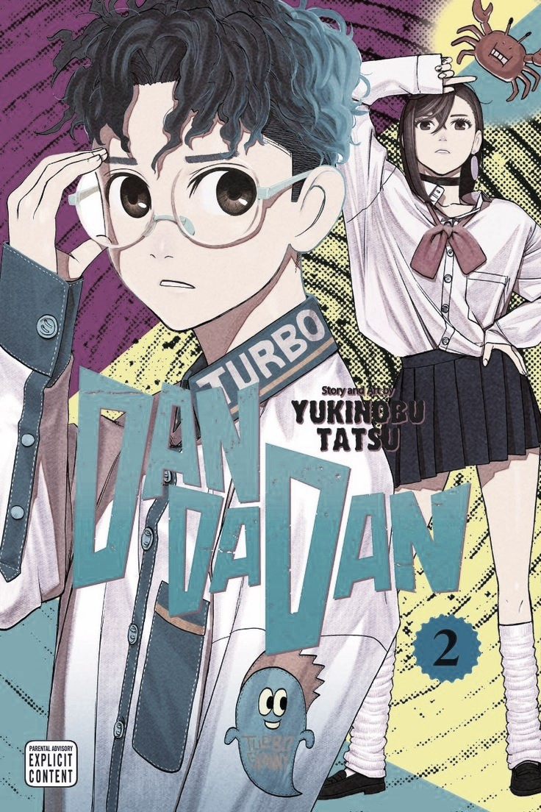
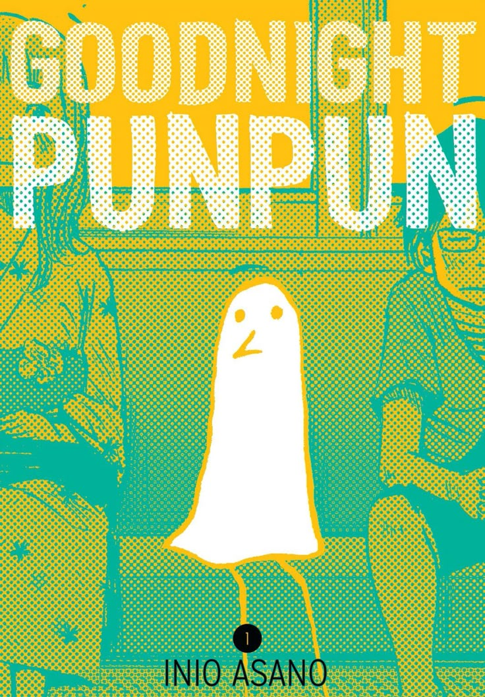

Takakura es un apasionado del ocultismo, aunque irónicamente no cree en fantasma, mientras que Ayase, convencida de la existencia de espíritus, desestima el misticismo del ocultismo. Juntos enfrentaran aventuras llenas de fenómenos sobrenaturales y misterio.

Genero:Comedia, Sobrenatural, Ciencia ficción, Fantasia, Terror
Autor:Tatsu Yukinobu
Estado: Emision
Donde leer:
Hikaru Ga Shinda Natsu
Yoshiki y Hikaru, dos adolescentes que viven en un pequeño pueblo rural de Japón. Han sido amigos desde la infancia, a pesar de tener personalidades opuestas. Sin embargo, su relación cambia drásticamente cuando Hikaru desaparece en las montañas durante una semana. Aunque regresa sin recordar nada, Yoshiki nota que algo está mal; el Hikaru que regresó no es el mismo. A pesar de esto, Yoshiki decide seguir a su lado, lo que lo lleva a una situación complicada y llena de misterio.
Genero:Horror, Psicológico, Sobrenatural, Misterio, Terror
Autor:Mokumoku
Estado: Emision
Donde leer:
Oyasumi Punpun
"Oyasumi Punpun" sigue la vida de Punpun Onodera, un niño que crece en un hogar disfuncional. Representado como un pajarito garabateado, Punpun se enamora de Aiko Tanaka en la escuela primaria. A medida que avanza la historia, Punpun enfrenta problemas familiares, abuso y violencia, lo que afecta su desarrollo emocional. La serie explora su crecimiento durante diez años, pasando por la adolescencia y la adultez, mientras lucha con sus sentimientos por Aiko y su propia identidad.

Genero:Drama, Psicológico, Thriller, Tragedia, Terror
Autor:Inio Asano
Estado: Finalizado
Donde leer:
.jpg)
.png)